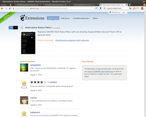
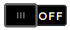
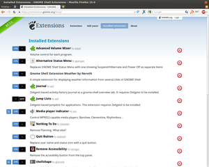
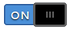
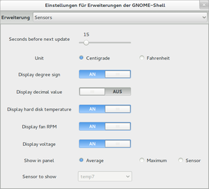

Extensions
Dieser Artikel wurde für die folgenden Ubuntu-Versionen getestet:
Ubuntu 16.04 Xenial Xerus
Ubuntu 14.04 Trusty Tahr
Zum Verständnis dieses Artikels sind folgende Seiten hilfreich:
 Der Funktionsumfang der GNOME Shell lässt sich mit diversen Erweiterungen (engl. "extensions") ausdehnen und individuell anpassen. Seit GNOME Shell 3.2 ist es möglich, über die Seite extensions.gnome.org
Der Funktionsumfang der GNOME Shell lässt sich mit diversen Erweiterungen (engl. "extensions") ausdehnen und individuell anpassen. Seit GNOME Shell 3.2 ist es möglich, über die Seite extensions.gnome.org  passende Erweiterungen zu installieren, verwalten und wieder zu entfernen. Erweiterungen dieser Art sind externe Anwendungen und kein Bestandteil von Ubuntu.
passende Erweiterungen zu installieren, verwalten und wieder zu entfernen. Erweiterungen dieser Art sind externe Anwendungen und kein Bestandteil von Ubuntu.
extensions.gnome.org¶
Voraussetzungen¶
Nach der Installation der GNOME Shell wird automatisch beim Aufruf der Seite extensions.gnome.org ein Plugin für die Internetbrowser Firefox, Chromium/Google Chrome und GNOMEs Webbrowser (ehem. Epiphany) installiert, damit die Verwaltung der Erweiterungen möglich ist. Bei Opera klappt die Verwaltung der Erweiterungen erst ab Version 12.10 und ab GNOME 3.6. Für andere Browser gibt es kein passendes Plugin, sodass für die Verwaltung der Erweiterungen einer der oben genannten Browser benutzt werden muss.
|  |
| Einzelansicht einer Erweiterung |
Installation¶
Um neue Erweiterungen zu installieren, muss der Anwender die Internetseite extensions.gnome.org mit einem dafür geeigneten Internetbrowser aufrufen. Die Internetseite erkennt selbständig, welche GNOME Shell Version benutzt wird und bietet dem Interessenten eine Vielzahl von Erweiterungen an.
Ist die gewünschte Erweiterung gefunden, kann mit einem Klick auf die Bezeichnung die dazu gehörende Übersichtsseite aufgerufen werden, wo neben einem Screenshot, Erläuterungen, Kommentare und Bewertungen zu finden sind.
Wurde eine passende Erweiterung ausgewählt, genügt ein Klick auf den Kippschalter  um mit dem dann erscheinenden Installationsdialog den Download- und den daran sich anschließenden Installationsvorgang fortzusetzen. Die ausgewählte Erweiterung wird im Lokalen Verzeichnis (~/.local/share/gnome-shell/extensions/) installiert. Damit einhergehenden Änderungen am System werden sofort wirksam, was einen Neustart der GNOME Shell in der Regel überflüssig macht.
Erweiterungen verwalten¶
Auf der Seite https://extensions.gnome.org/local/ können Erweiterungen installiert, konfiguriert, (de)aktiviert, aktualisiert oder gelöscht werden.
(De)aktivieren¶
|  |
| Übersichtsseite über alle installierten Erweiterungen |
Mit einen Klick auf den Kippschalter  lassen sich Erweiterungen ab- und wieder anschalten.
Aktualisieren (ab GNOME Shell 3.4)¶
Falls eine Aktualisierung für eine Erweiterung vorhanden ist, erscheint dieses Symbol links neben dem Kippschalter. Mit einem Klick auf das Symbol wird mit einer Bestätigung automatisch auf die neuste Version aktualisiert.
Konfigurieren¶
Manche Erweiterungen lassen sich auch konfigurieren, was an dem entsprechenden Symbol erkennbar ist. Mit einem Klick öffnet sich das Tool gnome-shell-extension-prefs, was auch im Terminal mit dem Befehl:
gnome-shell-extension-prefs
ausgeführt werden kann.
Löschen¶
|  |
| Einstellungen für Erweiterungen der GNOME-Shell - Beispiel: 'system-monitor' |
Um eine im Lokalen Verzeichnis (~/.local/gnome-shell/extensions/) installierte Erweiterung komplett zu löschen, genügt ein Klick auf das "Löschen"-Symbol rechts neben dem Namen der betreffenden Anwendung.
Sollte eine im Globalen Verzeichnis (/usr/share/gnome-shell/extensions/) installierte Extension zum löschen gewählt werden, sind diese nur deaktiviert. Ein erneutes aktivieren über die Website funktioniert nur, wenn die Aktivierung der betreffenden Erweiterung mit dem gnome-tweak-tool (wobei mehrere Aktivierungsversuche nötig sein können) ausgeführt wird.
Erweiterungen aus externen Quellen¶
Voraussetzungen¶
Um Erweiterungen aus einem "Personal Package Archiv" (PPA) [1] aktivieren zu können, muss zusätzlich das GNOME Tweak Tool vorhanden sein.
Installation¶
Die Erweiterungen werden aus der Fremdquelle heruntergeladen und im Verzeichnis ~/.local/share/gnome-shell/extensions abgelegt. Sollen Erweiterungen für alle Benutzer systemweit verfügbar sein, sollten diese mit Root-Rechten [4] im Verzeichnis /usr/share/gnome-shell/extensions abgelegt werden.
Aktivierung¶
Nach einem Neustart der GNOME Shell mittels Alt + F2 und der Eingabe von R , werden die neuen Erweiterungen verfügbar gemacht und können mit dem GNOME Tweak Tool unter "Shell-Erweiterungen" aktiviert werden.
Hinweis:
Falls Alt + F2 nicht aktiviert ist, kann dies unter "Tastatur → Tastenkürzel → System" nachgeholt werden.
Übersicht¶
Eine kleinen Überblick über einige nützliche Erweiterungen findet sich in diesem weiterführenden Artikel.
Problembehebung¶
Erweiterungen nach Neustart deaktiviert¶
Bei Ubuntu GNOME kann der Fehler auftreten, dass bei jedem Systemstart die Erweiterungen deaktiviert sind und einzeln wieder aktiviert werden müssen. In diesem Fall stellt man im Anmeldebildschirm die Sitzung von "GNOME" auf "Default" um, woraufhin die Erweiterungen auch nach einem Neustart aktiviert bleiben.
 - Übersichtsseite
- Übersichtsseite - Fedora Wiki
- Fedora Wiki- Erstellt mit Inyoka
-
 2004 – 2017 ubuntuusers.de • Einige Rechte vorbehalten
2004 – 2017 ubuntuusers.de • Einige Rechte vorbehalten
Lizenz • Kontakt • Datenschutz • Impressum • Serverstatus -
Serverhousing gespendet von